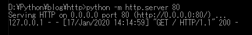

[Python] Web serverを起動する方法(http.server)
こんにちは。明月です。
この投稿はPythonでWeb serverを起動する方法(http.server)に関する説明です。
私の場合はPythonをローカルスクリプトによく使うので、Pythonでウェブサーバーを構築する場合はほぼないです。また、PythonではdjangoというウェブフレームワークがあるのでPythonで直接にウェブサーバーを構築する方はいないと思います。
個人的の考えですが、普通のデベロッパーならPythonだけ扱う人はいないと思います。メインはJavaあるいはC#、PHPを扱うことで足りない部分(?)や開発の便利性のためPythonを使う人がほとんどなのでウェブサーバを作ることはもっとないと思います。
JavaやC#の場合にPythonとともに使ってComplex言語タイプで使うこともできますが、そんなことまで実装する方はいないと思います。
PHPの場合はスクリプトのウェブ言語なので言語の限界があるのでPythonと一緒に使うことがあると思います。
でも、そのケースもPythonで独立的にhttp.serverでサーバーを構築することよりapacheのcgiを利用することがsessionやcookie管理的にも楽なのでhttp.serverは使いません。
でも、よく使わないライブラリをなぜ紹介することではそれでも全然使うことではなく、すごく簡単に構築できるので簡単なことを構築することでよいからです。
私の場合はこのhttp.serverを使う時、業務する時に様々なスクリプトを管理する場合があります。例えば、logファイル整理からデータベースバックアップ、マイグレーション、jenkinsなどで様々なスクリプトがあります。
スクリプトだけではなく、パラメータによって実行する対象も設定する時もあります。
それをただコンソールやスクリプトで管理することよりはウェブブラウザを利用する画面で管理することがよいと思って使います。(ロカールスクリプト管理ツールでJavaやPHP、IISなどで管理することは大変です。)
それならすごく簡単にウェブサーバーを構築します。
python -m http.server 80
<!DOCTYPE html>
<html>
<head><title>python</title></head>
<body>hello world</body>
</html>

ただ、静的なウェブサーバでWebsocketを設定して運用してもよいです。
link - [Python] WebSocketを使う方法
でも、ここでは静的なサーバーを構築してJavascriptのWebSocketを使うための説明ではありません。
動的なサーバーを構築しましょう。
# Webサーバーを構築するためにhttp.serverモジュールをimportする。
from http.server import HTTPServer, BaseHTTPRequestHandler
import urllib.parse as urlparse
import io
class myHandler(BaseHTTPRequestHandler):
# GETタイプのパラメータを分析する。(urlのクエスチョン(?)以降のデータをディクショナリで変換する。
def __get_Parameter(self, key):
# 当該なクラスに__param変数が宣言したかを確認する。
if hasattr(self,"_myHandler__param") == False:
if "?" in self.path:
# urlの?以降の値を分析する。
self.__param = dict(urlparse.parse_qsl(self.path.split("?")[1], True))
else :
# urlの?がなければ空ディクショナリを入れる。
self.__param = {}
if key in self.__param:
return self.__param[key]
return None
# POSTタイプのformデータを分析する。
def __get_Post_Parameter(self, key):
# 当該なクラスに__post_param変数が宣言するか確認する。
if hasattr(self,"_myHandler__post_param") == False:
# ヘッダーからformdataを受け取る。
data = self.rfile.read(int(self.headers['Content-Length']))
if data is not None:
self.__post_param = dict(urlparse.parse_qs(data.decode()))
else :
self.__post_param = {}
if key in self.__post_param:
return self.__post_param[key][0]
return None
# httpプロトコルのheader内容を入れる。
def __set_Header(self, code):
# responseコードをパラメータで受け取って返却する。
self.send_response(code)
self.send_header('Content-type','text/html')
self.end_headers()
# httpプロトコルのbody内容を入れる。
def __set_Body(self, data):
# bodyの応答はbyteタイプで入れべきだ。(必要の時にコメント解除)
#response = io.BytesIO()
#response.write(b"<html><body><form method='post'><input type='text' name='test' value='hello'><input type='submit'></form></body></html>")
#self.wfile.write(response.getvalue())
# data(string)をbyteタイプに変換して返却する。
self.wfile.write(data.encode())
# POSTタイプのrequestする時呼び出す。
def do_GET(self):
# GETタイプのパラメータのデータを取得する。
data = self.__get_Parameter('data')
# responseするbody内容だ。
body = f"""
<!DOCTYPE html>
<html>
<head><title>python</title></head>
<body>
<form method='post'>
<input type='text' name='test' value='{data}'>
<input type='submit'>
</form>
</body>
</html>
"""
# response header codeは200(正常)で応答する。
self.__set_Header(200)
# response bodyは上のhtmlコード内容を入れる。
self.__set_Body(body)
# POSTタイプのrequestする時呼び出す。
def do_POST(self):
# response header codeは200(正常)で応答する。
self.__set_Header(200)
# response bodyはformで受け取るtestの値に応答する。
self.__set_Body(self.__get_Post_Parameter('test'))
# http serverを生成する。
httpd = HTTPServer(('', 80), myHandler)
# サーバー停止(Ctrl + Break)が押下するまでmessageループを実行する。
httpd.serve_forever()

get方式のテストはurlでdataパラメータにhello worldの値を入れてサーバーに接続します。そうするとinputテキストにデータを入力されることは確認できます。
コンソール画面にはGETで呼び出せることが確認できます。
また、その状況でSubmitボタンを押下するとPost要請になって画面に文言だけ表示されることが確認できます。
私の場合はすごく簡単にを作成しましたが、Web上でのpythonをコントロールするためdo_GET関数やdo_POST関数にコード実装すると想定したプログラムが作成できます。
例えばinput textの代わりにselectを入れてそのパラメータの値に応じて他のpythonのスクリプトを実行させるか、ローカルロジックを運用されるように作成すればローカルでのpythonを操作することができるウェブプログラムを作成することができます。
link - https://docs.python.org/3.3/library/http.server.html
link - https://docs.python.org/3/library/http.server.html
link - https://docs.python.org/3/library/io.html#io.BufferedIOBase
link - https://wiki.python.org/moin/BaseHttpServer
link - https://gist.github.com/pavgup/11220737
ここまでPythonでWeb serverを起動する方法(http.server)に関する説明でした。
ご不明なところや間違いところがあればコメントしてください。
- [Python] メール(smtplib)を送信する方法2020/07/27 18:38:43
- [Python] HttpConnection(requestsモジュール)でウェブサーバーで接続する方法2020/07/20 14:41:51
- [Python] Excel(openpyxl)を扱う方法2020/07/16 16:40:31
- [Python] ファイル圧縮、解凍(zipfile)する方法2020/07/14 19:14:22
- [Python] Apache cgiでPythonを使う方法2020/07/09 19:58:19
- [Python] Web serverを起動する方法(http.server)2020/07/09 00:13:13
- [Python] WebSocketを使う方法2020/07/07 17:29:18
- [Python] PythonとJavaのソケット通信する方法2020/07/03 18:35:50
- [Python] PythonとC#のソケット通信2020/07/01 19:28:22
- [Python] INI(環境設定ファイル)を扱う方法2020/06/30 18:26:01
- [Python] Jsonを扱う方法2020/06/29 19:18:15
- [Python] XMLファイルを扱う方法2020/06/26 19:18:14
- [Python] IOを利用してCSVファイルを扱う方法2020/06/25 18:20:30
- [Java] 53. ウェブサービス(Web service)でエラーページを処理する方法2021/06/25 13:35:54
- [Design pattern] 1-3. ファクトリメソッドパターン(Factory method pattern)2021/06/23 19:45:37
- [Java] WebSocketでチャット履歴をローディングする方法2021/06/15 18:34:45
- [Java] WebSocketを利用してユーザ(サイト運用者)が他のユーザとチャットする方法2021/06/15 17:20:08
- [Design pattern] 1-2. ビルダーパターン(Builder pattern)2021/06/11 19:06:28
- [Design pattern] 1-1. シングルトンパターン(Singleton pattern)2021/06/09 19:40:05
- [Design Pattern] デザインパターンの紹介2021/06/08 20:42:36
- [Tools] Dbeaver(無料Sql queryブラウザツール)2021/04/28 18:26:49
- [Bootstrap] HTMLデザインのフレームワークのBootstrap紹介2020/07/30 19:06:36
- [Python] メール(smtplib)を送信する方法2020/07/27 18:38:43
- [Python] HttpConnection(requestsモジュール)でウェブサーバーで接続する方法2020/07/20 14:41:51
- [Python] Excel(openpyxl)を扱う方法2020/07/16 16:40:31
- [Python] ファイル圧縮、解凍(zipfile)する方法2020/07/14 19:14:22
- [Python] Apache cgiでPythonを使う方法2020/07/09 19:58:19
- [Python] Web serverを起動する方法(http.server)2020/07/09 00:13:13